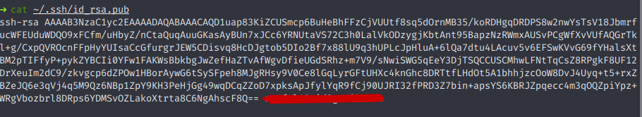
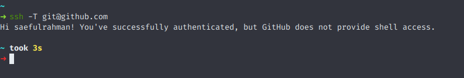

Cara Menggunakan SSH di Github

Dengan menggunakan protokol SSH, Kamu bisa terhubung dan remote ke server secara jarak jauh. Lewat kunci SSH Kamu bisa terhubung dan akses ke server tanpa perlu autentikasi setiap kali akses dengan memasukkan username dan password.
Maka penggunaan SSH pada repositori Github akan sangat membantu dan memudahkanmu. Oleh karena itu, proses remote repositori milikmu di Github tidak perlu melakukan autentikasi setiap kali akan mengaksesnya. Berbeda dengan metode HTTPS, setiap akan melakukan aksi harus memasukkan username dan password untuk validasi.
Nah, pada kali ini Kita akan mencoba membuat SSH dan bagaimana cara menggunakannya di Github. Okay, langsung saja Kita mulai!
Membuat SSH Key di Local
Langkah pertama yang perlu Kamu lakukan adalah membuat SSH key terlebih dahulu di local. Berdasarkan pada dokumentasi Github1, untuk membuat SSH key dilakukan dengan menambahkan algoritma enkripsi tamabahan agar lebih aman. Untuk membuatnya silakan ketik perintah berikut, untuk email ganti dengan email Github Kamu.
ssh-keygen -t rsa -b 4096 -C "your_email@example.com"Pada bagian ini, Kamu bisa mengisinya atau biarkan kosong. Jika dibiarkan kosong akan membuat SHH key dengan nama default id_rsa dan disimpan pada direktori ~/.ssh. Lalu jika mengisinya dengan nama yang Kamu inginkan, file akan di-generate dan disimpan pada direktori ~/.
Lalu pada saat mengisi passphrase, Kamu kosongkan saja dan enter. Sehingga sistem akan membuatkan SSH key secara otomatis seperti ini.
Lalu, cek pada direktori ~/.ssh dan akan ada SSH key yang sudah dibuat barusan.
Menambahkan SSH Key ke SSH Agent
Untuk memastikan apakah SSH Agent sudah berjalan atau tidak, gunakan perintah ini.
eval "$(ssh-agent -s)"Jika muncul seperti ini, maka SSH Agent sudah berjalan.
Agent pid 42150Tapi, jika belum berjalan coba tambah perintah sudo pada perintah diatas. Atau Kamu gunakan perintah berikut ini untuk menjalankan SSH Agent.
exec ssh-agent bashAtau gunakan ini, jika Kamu menggunakan terminal zsh.
exec ssh-agent zshSelanjutnya, tambahkan SSH Key yang sudah dibuat tadi ke SSH Agent dengan perintah berikut ini.
ssh-add ~/.ssh/id_rsaKemudian untuk mengecek, gunakan perintah ini.
ssh-add -lMenambahkan SSH Key ke Github
Sebelumnya Kamu ambil dulu kunci public SSH yang sudah dibuat tadi dengan perintah cat, seperti ini.
cat ~/.ssh/id_rsa.pubKemudian copy semua teks yang ditampilkan.

Sekarang saatnya Kamu menambahkan SSH Key yang sudah dibuat tadi ke Github. Pertama silakan login dahulu ke akun Github dan buka halaman SSH and GPG Keys , buat kunci SSH baru dengan klik tombol New SSH Key. Lalu masukkan public key yang sudah di-copy tadi, beri judul dan simpan.
Uji Konektivitas SSH
Langkah terakhir adalah menguji koneksi SSH yang sudah dibuat tadi, apakah berhasil terhubung atau tidak. Untuk mengeceknya gunakan perintah berikut ini.
ssh -T git@github.comJika, hasil yang keluar muncul seperti ini, artinya koneksi SSH berhasil. Selanjutnya tinggal melakukan remote repositori menggunakan protokol SSH.

Selamat sekarang Kamu sudah bisa melakukan remote repositori lewat SSH tanpa memasukkan username dan password lagi. Nah, Sekarang coba clone repositori dari Github milikmu menggunakan SSH.
Silakan Kamu coba sendiri langsung. Jangan lupa bagikan kepada teman-teman yang lain, jika informasi ini bermafaat!

Saya seorang professional Web Developer yang telah berpengalaman selama kurang lebih 6 tahun. Saya berhasil membuat website yang responsif, cepat, dan mudah digunakan. Bidang keahlian utama Saya adalah Front-End Developer, seperti CSS, HTML, dan JavaScript untuk membangun website skala kecil hingga menengah.
Related Post

Cara Hosting atau Deploy Hugo di Github Pages
Github adalah salah satu layanan khusus developer yang dibuat karena terinpisrasi dari cara bekerja pada pogrammer. Singkatnya Github adalah sebuah ma...

Membuat Blog Pribadi Menggunakan Hugo
Memilki sebuah blog pribadi merupakan salah satu langkah untuk memperkenalkan diri kepada orang lain. Hadirnya blog pribadi akan membuatmu lebih mudah...